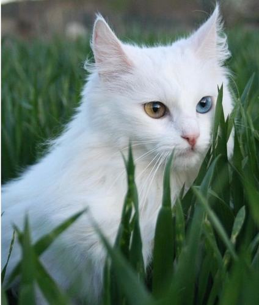

Nguồn gốc
Mèo Angora Thổ Nhĩ Kỳ hay mèo Ankara là một giống mèo có nguồn gốc từ vùng Ankara Thổ Nhĩ Kỳ. Đây là một giống mèo khá kỳ lạ, gần như độc nhất vô nhị, vì chúng có nhiều đặc điểm giống loài…chó hơn là loài mèo. Tuy nhiên, vì vẫn là một con mèo nên chúng không biết sủa, nhưng bù lại Mèo Angora Thổ Nhĩ Kỳ lại rất thông minh, có trí nhớ tốt.
Mô tả
Chính vì thế, mèo Angora thường học rất nhanh. Bạn có thể dễ dàng huấn luyện chúng hay dạy cho chúng những bài học đơn giản, chúng có thể bắt chước một cách nhanh chóng.
Chi tiết
Vì mang nhiều đặc điểm giống loài chó, nên mèo Angora thường rất thích nghịch nước cũng như ngâm mình dưới nước, rất hiếu động và đặc biệt thích chơi đùa với trẻ nhỏ.